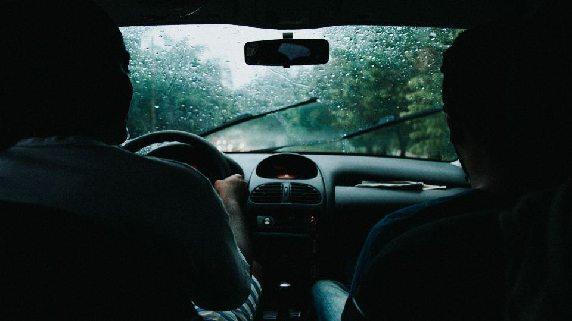
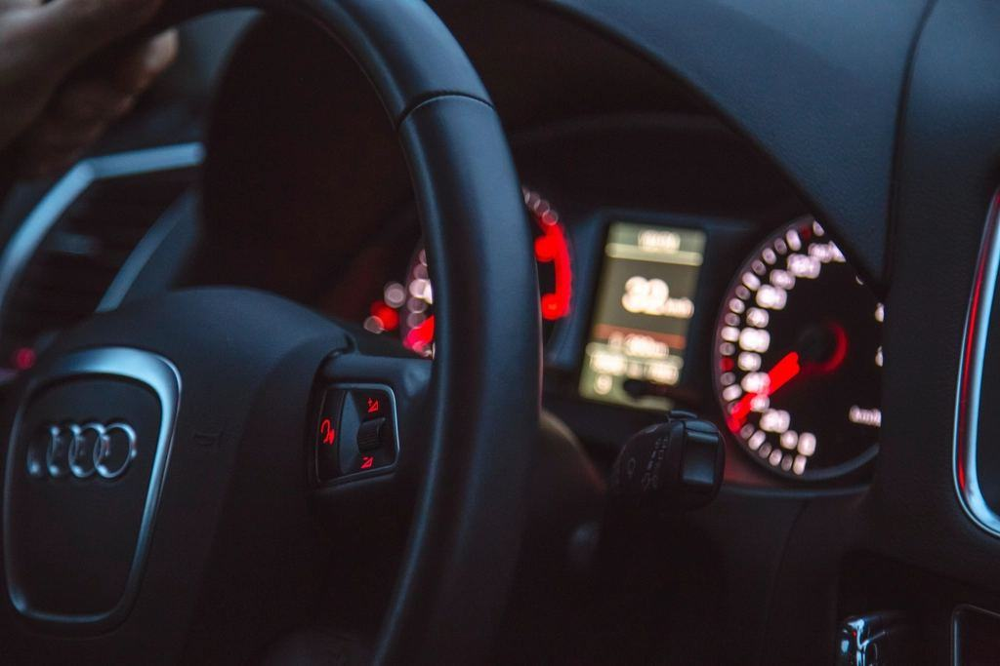
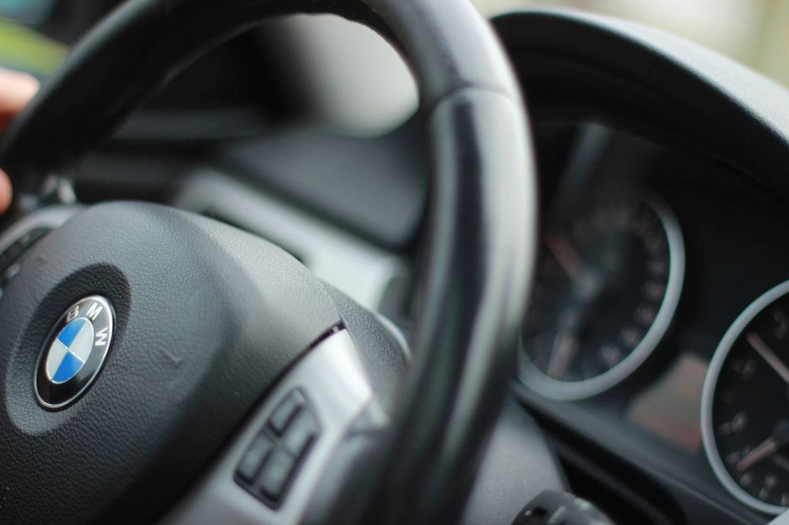

Tjänster
I dag är vi 96 anställda med skolor i sex orter, 18 lastbilar och bussar och 34 personbilar. Under 2025 tog 410 elever tung behörighet hos oss, de flesta genom arbetsmarknadsutbildning eller med en arbetsgivare som betalar.

Tung lastbil
CE-utbildningen tar 12–16 veckor och innehåller YKB grundutbildning, ADR och praktik hos ett åkeri. Vi kör med timmerbil, grusbil och skåpbil så att eleven har provat det arbetsgivaren kör.
Två av tre elever har ett anställningslöfte när utbildningen börjar.

Buss och kollektivtrafik
D-utbildningen genomförs i Luleå och Gällivare med fyra bussar, varav en ledbuss. Vi samarbetar med bussbolagen om praktik på skolskjuts- och länslinjer.
Utbildningen tar 10 veckor för dig som redan har C-behörighet.

B-körkort i sex orter
I varje ort har vi minst två trafiklärare och personbilar med dubbelkommando. Alla elever kör i mörker, på vägar med vägren och i snö innan vi bokar körprov.
Riskettan hålls lokalt och halkbanan ersätts vintertid av isbanan.

Företag och fortbildning
För arbetsgivare håller vi YKB-fortbildning, ADR och sparsam körning där personalen finns – i Kiruna, i Kalix eller på er egen depå.
Ni får ett samlat intyg per förare och påminnelse när fortbildningen löper ut.
Från ansökan till anställning
- 1

Samtal och tester
Vi går igenom körkortstillstånd, läkarintyg och om du har en arbetsgivare eller går via Arbetsförmedlingen.
- 2

Teori och YKB
Fyra veckor i klassrum med YKB-moduler, regler för kör- och vilotider och lastsäkring.
- 3

Körning och praktik
Manöverbana, landsväg och vinterväg – sedan två veckors praktik på ett åkeri.
- 4

Prov och anställning
Körprov hos Trafikverket i Luleå eller Gällivare, och vi förmedlar kontakten med arbetsgivaren.
Godkända för yrkesutbildning
- Godkänd YKB-utbildareTransportstyrelsens godkännande för YKB grundutbildning och fortbildning i godstrafik och persontrafik.
- ADR-utbildareGodkända av MSB att hålla ADR-utbildning för grund, tank och klass 1.
- ArbetsmarknadsutbildningUpphandlad leverantör av förarutbildning C och CE till Arbetsförmedlingen i Norrbotten.
- ISO 9001Certifierat ledningssystem för kvalitet sedan 2021, med årlig revision.